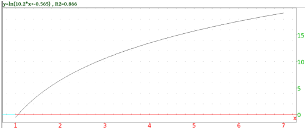

8.2.6 Logarithmic regression: logarithmic_regression logarithmic_regression_plot
You might expect a set of points to lie on a logarithmic curve
y=m ln(x) + b. The logarithmic_regression command finds
the logarithmic curve of best fit.
-
logarithmic_regression takes two arguments:
-
xcoords, a list of x-coordinates.
- ycoords, a list of y-coordinates.
You can combine two arguments into a matrix with two columns (each
list becomes a column of the matrix).
- logarithmic_regression(xcoords,ycoords)
returns a sequence m,b of the numbers in the best fit logarithmic
curve y=m ln(x) + b.
Example
Input:
evalf(logarithmic_regression([[1,1],[2,4],[3,9],[4,16]]))
or:
evalf(logarithmic_regression([1,2,3,4],[1,4,9,16]))
(where the evalf is used to get a numeric approximation to an
exact expression):
Output:
| 10.1506450002,−0.564824055818
|
so the best fit logarithmic curve will be
y = 10.1506450002 ln(x) −0.564824055818.
The logarithmic_regression_plot command draws the best fit
logarithmic curve.
-
logarithmic_regression_plot takes two arguments:
-
xcoords, a list of x-coordinates.
- ycoords, a list of y-coordinates.
You can combine two arguments into a matrix with two columns (each
list becomes a column of the matrix).
- logarithmic_regression_plot(xcoords,ycoords)
draws the best fit logarithmic curve, and puts the equation and R2
value above the graph.
Example
Input:
logarithmic_regression_plot([1,2,3,4],[1,4,9,16])
Output:
